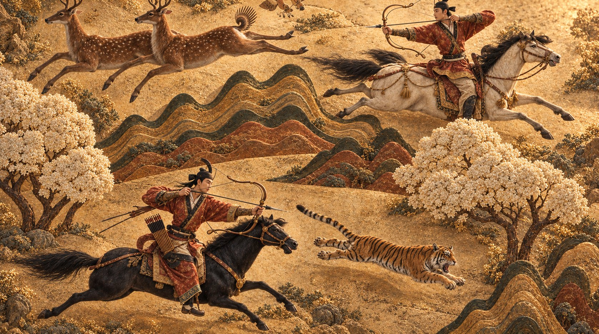

좋은 소재가 있나요? 좋은 장면?
아니면 이미 조회수가 폭발하는 AI 쇼츠 영상을 만들었나요?
하지만 그것만으로는 IP가 성립하지 않았을 거예요
시리즈가 되려면 1화 다음 이야기와, 시즌을 버틸 인물·세계관이 필요해요.
시즌을 버티게 하는 세 가지
- 01인물
시즌이 바뀌어도 원하는 것이 이어져요
소리만 듣고 쇠를 가려내는 대장장이의 딸 - 02스토리
다음 화가 궁금해져요
그녀가 벼린 칼이 고향을 치는 데 쓰인다 - 03세계관
시즌이 달라도 규칙은 그대로예요
다민족 사회 · 변진의 철
아클링스는 한국 신화·고대사 기반 IP 스튜디오입니다
지금 만들어지고 있어요
당신의 킹덤을 실제 역사 위에 세우세요
부여, 삼한, 옥저, 동예, 고구려, 백제, 신라… 기록 속 나라들이 당신의 세계관이 됩니다
인터넷에 떠도는 역사 위키가 아니라
원전과 연구 자료를 바탕으로 세계를 제안합니다
설정을 실감나게 살릴 수 있는 사료를 찾아드립니다.
이 이야기가 한 편으로 끝날지, 시즌으로 확장될 힘이 있는지 짚어 드립니다.
지금 아이디어의 장점을 살리면서 시리즈화할 수 있는 방법을 찾아봅니다.
- 한 편이라면
- 끌려가 살아남는 데서 끝납니다
- 시즌이라면
- 철 기술이 나라 사이의 거래가 되며 판이 커집니다
- 판단
- 시즌으로 확장할 힘이 있음
- 살릴 점
- 철이라는 실재하는 국력을 주인공의 무기로
- 채울 점
- 주인공을 왜 살려 두는가
- 키울 방향
- 볼모에서, 두 나라 사이를 움직이는 사람으로
완성된 기획안을 아클링스에 업로드하세요
당신의 포트폴리오를 글로벌 콘텐츠 마켓 폼으로 관리하세요
아클링스에서는 기획안을 시리즈 바이블로,
피치, 아웃라인, 파일럿으로 업스케일 하도록 유도합니다.
포트폴리오 작성으로 글로벌 콘텐츠 마켓에 진출하세요.

- 로그라인
- 이야기를 한 문장으로
- 피치 문서
- 콘텐츠 세일링의 시작
- 파일럿·티저 영상
- 시리즈를 대표하는 대본·영상
스케치 한 장도 이야기의 시작이 돼요
티저의 한 컷, 공방에서 빚은 재현품 하나도요. 완성되기 전의 작업도 이 세계의 첫 장면이 될 수 있어요
아클링스의 장편 시리즈에서 마음이 가는 장면 하나를 골라 보세요.
그 장면 속 옷 한 벌, 칼 한 자루, 떠나는 배 한 척을 당신의 방식으로 옮기면 돼요.
무엇을 어떻게 만들지 막힐 때는 라이브러리의 사료가 근거가 되어 줍니다.
지금 이 순간에도 이 세계의 장면들이 여러 사람의 손을 거쳐 만들어지고 있어요.
포트폴리오를 등록하고 필요한 아티스트와 연결되세요.
아클링스: 한국 신화·고대사 기반 IP 스튜디오
아클링스(Arklings)는 C.S.루이스와 톨킨이 활동했던 판타지 문학 클럽 '잉클링스(Inklings)'를 모티브로 한 명칭입니다.
잉클링스가 상실된 신화의 흔적을 문학(Ink)으로 복원했던 것처럼 아클링스 또한
파편화된 한국 고대의 역사와 신화를 방주(Ark)에 보존하여 서사 유산으로 물려주겠다는 의미를 담고 있습니다.
아클링스는 한국 고대 공동 유산을 데이터에 보존하고, 여러 창작자가 그 유산을 바탕으로 하나의 공유세계관을 함께 구축하는 IP 스튜디오입니다.